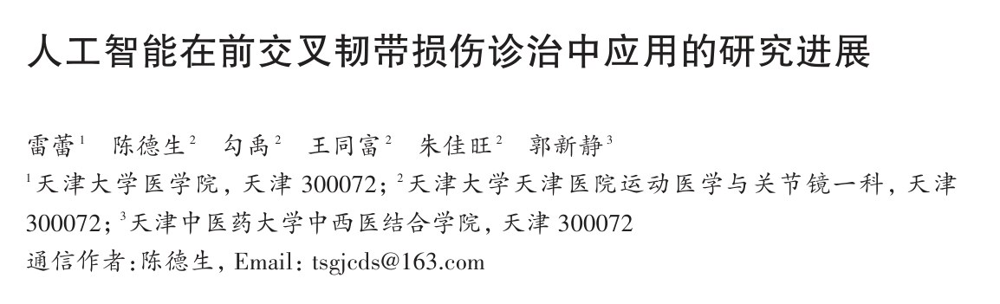
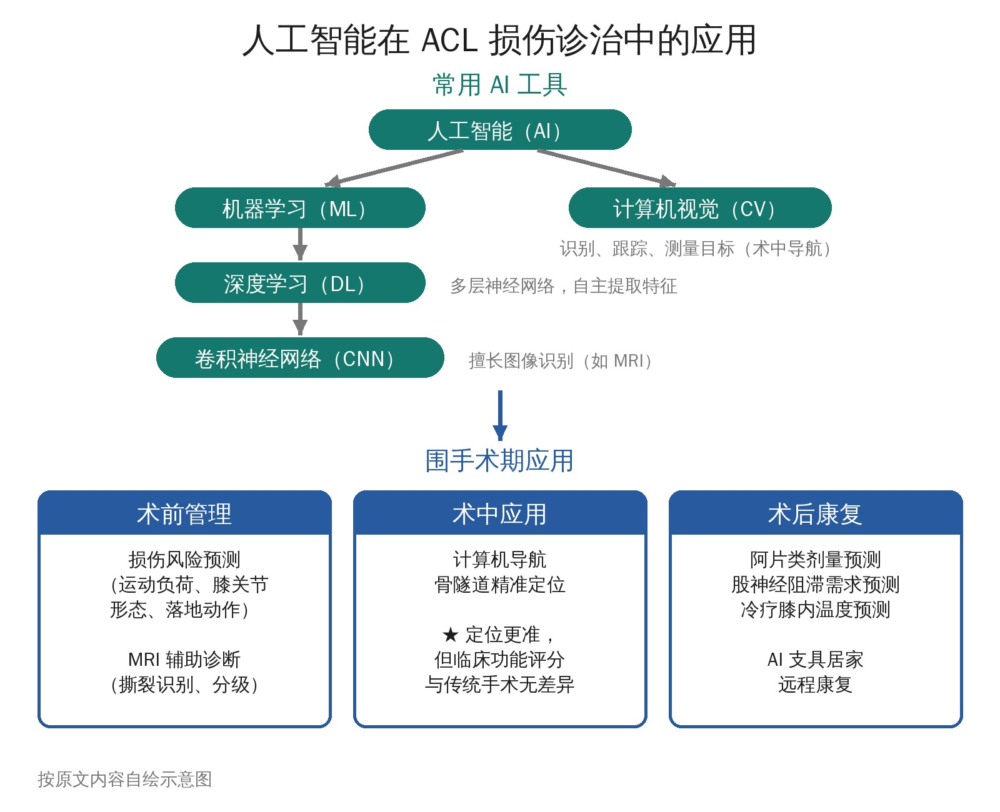

🔖原文首页（中华医学杂志 2026 年第 106 卷第 1 期）
📚 文献卡片
▪ 题目：人工智能在前交叉韧带损伤诊治中应用的研究进展
▪ 作者：雷蕾 · 陈德生（通信作者）· 勾禹 · 王同富 · 朱佳旺 · 郭新静
▪ 机构：天津大学医学院；天津大学天津医院运动医学与关节镜一科；天津中医药大学中西医结合学院
▪ 期刊：中华医学杂志
▪ 年卷期：2026;106(1):92-96
▪ DOI：10.3760/cma.j.cn112137-20250725-01849
▪ 文章类型：综述（引用文献 37 篇）
▪ 关键词：前交叉韧带；前交叉韧带损伤；人工智能；神经网络；计算机视觉；运动医学
前交叉韧带（ACL）损伤是膝关节最常见的损伤类型，约 80% 发生在急停、变向、跳跃落地等运动场景。近年来，人工智能（AI）被引入骨科和运动医学，在术前诊断、风险预测、术中导航和术后康复中都有尝试。
本文按“术前 → 术中 → 术后”的顺序，梳理了 AI 工具在 ACL 损伤围手术期的应用和评价。

🔖全文框架示意：常用 AI 工具与围手术期应用（按原文内容自绘）
| 阶段 | AI 应用 | 目前证据 |
|---|---|---|
| 术前 | 损伤风险预测；MRI 自动识别和分级 ACL 撕裂 | 诊断准确度与放射科医师相近；风险模型处于起步阶段，缺乏大规模验证 |
| 术中 | 计算机导航辅助骨隧道定位 | 隧道定位更准，但术后功能评分和临床结局与传统手术无差异 |
| 术后 | 阿片类药物剂量与神经阻滞需求预测；AI 支具远程康复 | 多为单项研究，远程 AI 康复短期评分更好 |
一句话概括：AI 读 MRI 已接近放射科医师水平，导航能让隧道打得更准，但“更准”还没有转化为更好的临床结局。
• 机器学习（ML）：AI 的核心分支，让计算机从数据中学习、改进，对新数据做出预测；包括监督、无监督、半监督和强化学习
• 深度学习（DL）：ML 的子领域，用多层神经网络模拟人脑神经元，自主提取特征
• 卷积神经网络（CNN）：DL 的一种，由卷积层（提取特征）、池化层（减少数据量）、全连接层（做决策）组成，特别适合图像识别
• 计算机视觉（CV）：让计算机“看”——识别、跟踪、测量目标；术中导航就是结合 CV 根据影像定位手术目标
• 基于预训练 CNN 分析 3D 膝关节运动，监测运动员负荷和膝关节损伤风险，表现出高敏感性
• 用 ML 分析膝关节形态学特征构建原发性 ACL 损伤预测模型，预测准确率超过 90%
• 用惯性传感器和光电设备评估跳跃后的腿部稳定性和负荷吸收能力，落地错误评分与 ACL 损伤风险正相关
• 作者结论：有一定可行性，但仍处于起步阶段，缺乏公认的成熟模型和大规模临床验证
MRI 是诊断 ACL 损伤的影像学金标准，结合前抽屉、拉赫曼、轴移等查体综合判断。AI 主要用于自动读片：
| 研究 | 模型 | AI 表现 | 对照 |
|---|---|---|---|
| Bien 2018（MRNet） | CNN，识别完整与撕裂 ACL | 灵敏度 76%，特异度 97% | 放射科医师借助 AI 后诊断表现提升 |
| Liu 2019 | 全自动 CNN，以关节镜为金标准 | 全层撕裂灵敏度、特异度均 96%，AUC 0.98 | 放射科医师 96%～98%，无显著差异 |
| Zhang 2020 | 定制 CNN，多序列 MRI | 灵敏度、特异度、准确度均 96% | 高级放射科医师灵敏度 96%、特异度 86%，无显著差异 |
| Namiri 2020 | 多类别 CNN：完整、部分撕裂、全层撕裂、移植物 | 完整 ACL 灵敏度 89%～93%；全层撕裂 76%～82%；移植物 97%～100% | 未与放射科医师比较 |
• 趋势：从早期的“完整 vs 撕裂”二分类，发展到多类别分级，以及自动识别撕裂的解剖部位
• 国内研究用无监督 ML 分析 ACL 断裂患者的临床特征，识别潜在亚群和合并损伤规律
• 作者认为 AI 模型“具有替代医师完成 ACL 损伤诊断工作的潜力”——这一表述偏乐观，见证据评价
骨隧道位置是 ACL 重建的关键：胫骨隧道太靠前增加移植物撞击风险，太靠后增加旋转不稳。
• 回顾性队列：两组胫骨隧道无差异，导航组股骨隧道更垂直于 Blumensaat 线
• 首例基于 CT 的导航 ACL 重建：用皮肤参考点配准，精度在 1 mm 以内
• 前瞻性随机对照：导航组胫骨隧道更接近理想位置，移植物撞击更少
• 另一项 100 例随机对照：两组定位准确性无差异，可能与术者经验丰富有关
• 荟萃分析：导航组隧道定位更精确，但术后功能评分和临床结局无差异
• 其他用途：保留 ACL 残端时辅助定位；比较前内侧入路与经胫骨隧道、单束与双束重建等
启示：导航可能对经验不足的术者更有帮助，术者经验仍是不可忽视的因素。
• 阿片类药物：用 ML 建模预测理想剂量，防止过量使用
• 股神经阻滞：ML 可预测 ACL 术后是否需要股神经阻滞
• 冷疗：计算机模拟 + ML 实时预测冷疗时的膝关节内温度，误差约 0.1 ℃
• AI 支具远程康复：内置康复指导的便携式传感器支具，居家远程康复组的 IKDC 和 KOOS 评分高于院内康复组，1 年时 Tegner 活动评分也更高
• 注意：远程 AI 康复不适合所有患者，有些情况仍需当面评估和手法治疗
• 文章性质：叙述性综述，未交代检索策略和纳入标准，没有图表汇总，篇幅较短（正文约 3 页）
• “导航”是否等于 AI：文中引用的导航研究（2007、2011、2012 年等）大多是传统的计算机辅助导航，并不涉及机器学习，把它们归入 AI 应用概念上有些宽泛
• MRNet 数据疑似写反：原研究报告的是 AI 辅助提高了放射科医师识别 ACL 撕裂的特异度，本文写成“灵敏度提高 5%、特异度不变”，并据此得出“提高诊断敏感度”的结论
• 结论偏乐观：多数诊断模型是单中心、回顾性数据，缺少外部验证和前瞻性研究；“具有替代医师的潜力”的说法证据不足。文中也未讨论数据偏倚、可解释性、伦理和监管等问题
• 多处引用与论点不对应：CNN 结构引用的是一篇导航荟萃分析；ML 定义引用的是一篇胫骨平台后倾的尸体研究；“查体联合影像高灵敏度”引用的是胫骨后倾病例系列；“保留残端促进恢复”引用的是导航翻修研究；阿片类剂量模型引用的是一篇阿片危机大数据综述；“远程 AI 康复有效”引用的是一篇手机平台满意度调查
• “扩大样本、延长随访”：引用的 Yavari 2023 是荟萃分析，并非一项扩大样本的原始研究
• 缺少康复视角：术后康复部分只有一项 AI 支具研究，未涉及动作捕捉、可穿戴传感器评估重返运动等康复领域更常见的 AI 应用
① 诊断：AI 读 MRI 已接近放射科医师，可作为辅助，但不能替代查体和临床判断
② 风险预测：模型仍在起步阶段，暂不能用于筛查运动员
③ 术中导航：隧道定位更准，但临床结局与传统手术无差异
④ 术后康复：AI 支具和远程康复有初步效果，适合作为补充，不能取代当面评估
★ 注意：目前证据多为单中心、小样本研究，需要外部验证和长期随访
欢迎关注悦美力公众号，获取更多物理治疗的专业知识！
📄参考文献：
雷蕾, 陈德生, 勾禹, 等. 人工智能在前交叉韧带损伤诊治中应用的研究进展[J]. 中华医学杂志, 2026, 106(1): 92-96. DOI: 10.3760/cma.j.cn112137-20250725-01849.
原文无插图；首页为原文截图，框架示意图和表格为编者按原文内容整理绘制，仅用于学术交流。原文版权归中华医学会所有。